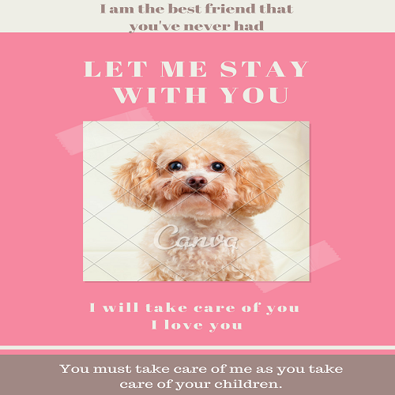

This page has been designed to remind
the perfection in the memorial works of
the creation. Formerly, the world was
perfect and everything created was good
The idea by making this wonderful Canva
design is to stress on the importance of
“The Spirit /Holy Spirit” in life,and mainly
in the Christian life.
Animals are like children and useful.
As children, they need food, special
attention,and a good accommodation.
Protect them and be kind with them.

Love is patient, love is kind. it does not
envy, it is not proud, it is not irritable.
It is not self-seeking; it keeps no record
of wrongs.“Love the others.”